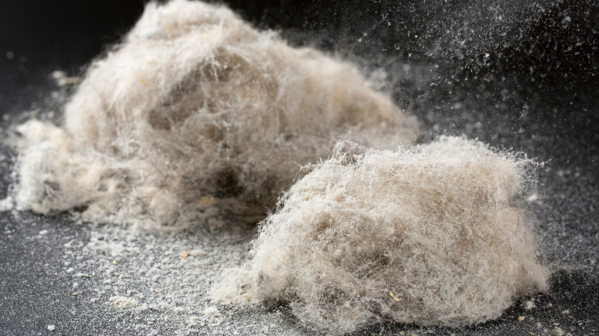
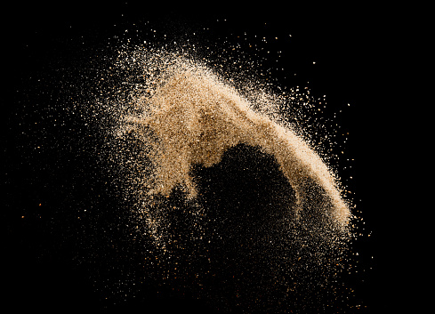
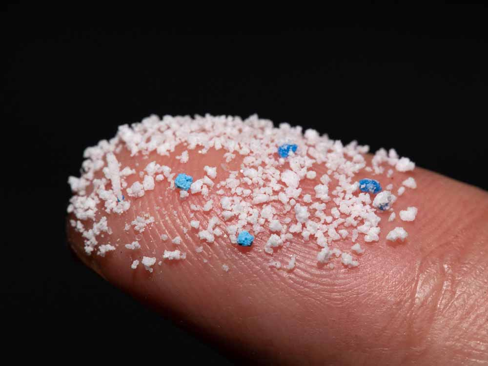

features

微量金属
金属でない元素も含める場合が多く，微量元素とほとんど同じ意味に使われる。 微量であるが生体が摂取しないと障害が現れる元素。 鉄，銅，亜鉛，マンガン，ニッケル，コバルト，モリブデン，クロム， セレン，ヨウ素，フッ素，スズ，ケイ素，バナジウム，ヒ素など。

放射性元素
放射能をもつ元素。 原子核が不安定で、自発的に放射線を放出して崩壊する。 天然に存在するカリウム・ラジウムなどのほか、人工的に作られるアインスタイニウム・ノーベリウムなどがある。 狭義には、安定同位体をもっていないウランなどをいう。

マイクロプラスチック
直径5ミリメートル以下の小さなプラスチックのことをいいます。
プラスチックごみは、ポイ捨てやごみ処理施設へ輸送される過程で、風や雨で流され、下水を通って海に流れ着きます。
海岸に漂着したプラスチックごみは、波や砂にもまれ、強い紫外線にさらされます。